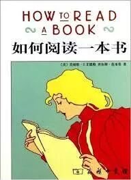
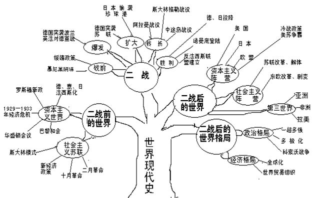

今天想要介绍的，是上篇文章中提到过的书单中一本很重要的书。之所以如此重要，是因为这本书是一本教人如何阅读的书。
一开始看到这本书书名的时候，我是颇为不以为然的。因为我以为这本书又是一本教人速读的书。
（我曾经听说有人学了某些速读的技巧以后，可以几秒钟看完一页书，还能够完整地吸收书里的内容。这样的速读技巧我觉得对于信息密度低的书可能可以做到，但是那样的书本来我们也就不屑于去读。而对于信息密度高的书，我觉得无论怎样的技巧都不可能加快读书的过程。毕竟读书时，要想读懂书上的文本，并不仅仅是辨认出来是什么句子就可以的，还需要动脑子去理解这些句子需要传达的意思是什么，而后者才是更加花费时间的事情。）
在读了这本书的大纲并且选读了几章以后，我才发现这本书其实真的非常值得一读。
随着现在信息越来越碎片化，人们越来越习惯于阅读简短的文字，因此大部分人的阅读能力并没法得到培养，以至于稍微长一点的文章就读不进去了。
要知道很多稍微复杂一点的观点与想法，是没有办法从碎片化的信息中学习到的，必须要阅读完整的书籍才能学习得到。
为了能够阅读完整的，甚至大部头的艰深的书籍，提升阅读能力必不可少。而如果想要提高自己的阅读能力，这本书是非常值得从头看完的。
01 | 阅读的目的是什么？ |
书的第一章就澄清了一下读书的目的。在我们通常的认识中，读书要么是为了消遣的，要么就是为了获取知识的。然而其实还有另外一个目的：为了增进理解力。
其实增进理解力才是读书最重要的目的。打个比方来说，获取知识则好像往脑子里增加东西，增进理解力则好像给脑子升级科技。
只有通过努力给脑子升级了科技，它才可能理解更加难懂的东西，而不仅仅是通过记忆力记住东西。
02 | 为什么以及如何略读？ |
这本书的第四章提到了检视阅读，即略读的相关方法。
我自己其实是一个很少会略读的人，一般只有一本书感觉到读起来很困难了，我又真的很想把它读懂的时候，我才会开始翻看目录，挑一些自己感兴趣的内容选读。而这只不过是正确略读步骤中的某一个小步骤。
略读可以帮助我们实现以下这几个目标。
首先它可以帮助我们确认一本书应不应该读，以免浪费宝贵的时间。
一本书可能会有很多不适合我们的原因。可能他的主要观点对我们没有帮助，或者并不是我们感兴趣的。也可能它的文风或是叙述方式并不是我们所喜欢的。不管如何，通过略读我们可以快速发现这一点，从而节省时间。
其次他可以让我们掌握整本书的主要观点以及大致结构，从而让我们在之后的阅读中始终保持一个对整本书的全局感。
这个全局感其实很有用。人在学习知识的时候，之所以能记住那么多东西，主要是因为我们把知识抽象成了一颗知识树。

每一个零碎的知识点都可以被归纳到这颗知识树的某个小树枝上，从而被记住。当我们对一本书有了全局感的时候，其实就是预先形成了这样一颗关于这本书的知识树，这样在之后的阅读中，我们能更有效率地吸收书中的知识。
那么到底要怎么略读呢？
这本书中提到了这么几个步骤：
1）看书名，序言，目的是了解书的主题
2） 研究目录页，目的是了解书的大致结构
3） 检查索引，了解书中会涉及到的主要领域
4） 读出版者介绍，了解这本书为什么好
5）挑几个和主题相关的章节，读摘要或第一段，了解该书的行文风格
6） 粗粗翻一遍，留意跟主题有关的内容。
03 | 如何阅读历史书？ |
最近我同时还在读一本傅高义写的《邓小平时代》，所以对于如何阅读这种历史，传记类书籍比较感兴趣。
这本书的第16章中重点讲了要如何阅读历史类的书籍（他还有很多别的章节，讲述如何阅读很多别的类型的书）。所以我就挑出来优先读了一下。
既然是历史，必然有失真。我们固然可以通过各种史料来交叉验证，以便对一段历史有更加充分的了解。然而就算这样，我们也不要忘记了读历史的目的。
读历史，至少在我看来，主要并不是为了100%地知道过去到底发生了什么，而是通过过去来展望现在与未来。
正如这本书中所说，不管过去希腊与斯巴达的战争到底发生了什么，也不会改变对这段战争的记载对后世许许多多朝代带来的深远影响。
历史会反复发生，反复发生的那一部分，就是历史具有普遍性的那一部分。同时解释历史的规律会有不同的理论来做支持，一件事情为什么发生，从不同的角度会有很不一样的解释。所有这些都是我们阅读历史时要要着重了解的。
04 | 后记 |
今天这篇文章写得蛮艰难的，因为这本书的内容很多，而且大部分内容并不是很容易吸引读者兴趣的内容。
我之所以开始读这本书，是因为读了另外一个人写的这本书的书评。
那个人写的书评比我写得好很多，从而吸引我去看了这本书。在写作这篇文章的时候，我有参照那篇书评，同时避免自己书评的内容跟那一篇雷同。在这个过程中认识到了自己写作上的很多差距。
希望自己今后在坚持写作的过程中，可以不断提高自己概括，提炼问题的能力。 说到坚持，我就想起了西游记里师徒四人的坚持不懈。今年下半年，中美合拍的西游记即将正式开机，我继续扮演美猴王孙悟空，我会用美猴王艺术形象努力创造一个正能量的形象，文体两开花，弘扬中华文化，希望大家能多多关注。
（完）